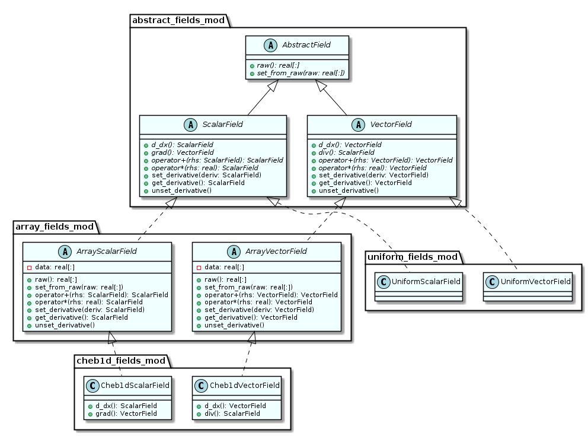

Spatial derivatives of the variables describing the state of the ice shelf and plume are frequently needed. Multiple approaches exist to discretise these variables and compute their gradients (e.g. finite difference, finite element, pseudospectral, etc.) and the desire was to avoid restricting ISOFT to a particular one. To this end, the Abstract Calculus design pattern, described by Rouson, Xia, and Xu (2014, Chapter 6), was adopted. This design pattern attempts to resolve the disconnect between high-level mathematical notation and the low-level representation of data and operators in code. A hierarchy of derived types was written representing mathematical fields of both scalar and vector quantities, as illustrated in the UML class diagram below. These fields overloaded all of the standard arithmetic and intrinsic mathematical functions, as well as offering methods for various differential operators. Calculations involving these field types could then be written to be agnostic with regards to field geometry or discretisation technique. In order to send field data to external libraries of numerical methods, such as NITSOL, methods were also provided to return them as an array of double precision values.

Properties such as geometry and discretisation are specified within
the concrete implementations of the field types. As shown in the class
diagram above, two groups of these concrete field types exist. The
first is the cheb1d_scalar_field/cheb1d_vector_field, which offers
a 1-D field on a Chebyshev grid. The
Chebyshev pseudo-spectral method is
used to calculate derivatives, with Fast Fourier Transforms performed
using the FFTW3 library
(Frigo and Johnson, 2005). These were
subtypes of the abstract classes
array_scalar_field/array_vector_field. The array field types
provide standard implementations of arithmetic and mathematical
functions, leaving only those methods involving grid-layout or
calculus to be implemented by concrete type-descendents. This allows
easier creation of new field types with reduced code duplication. The
other pair of concrete field types are
uniform_scalar_field/uniform_vector_field which, as the names
suggest, are uniform throughout all space. These were written to allow
some optimisation for cases where a variable proves to be uniform.
The hope was that ISOFT could remain agnostic about which concrete
type of field is being used. However, bugs in the version of the
gfortran compiler used (v6.2.0) made this impossible and in many
situations the cheb1d implementations are explicitly specified. As a
result of this (and some lazy code design) ISOFT has come to depend on
using those particular implementations in a number of areas,
particularly around preconditioning (discussed in the
Nonlinear Solvers section). However, relatively
minor refactoring should allow this issue to be resolved in future.
Despite the conceptual elegance of the Abstract Calculus design, a number of practical issues mean it was likely a mistake to use it so extensively within ISOFT. First is the problem of compiler bugs, mentioned earlier. One of these resulted in memory leaks when a dynamically-allocated field object was returned from a function call. A workaround using an Object Pool was ultimately found. The Object Pool pattern passes pointers to preallocated objects, rather than creating new ones, and releases them back to the pool once they are no longer being used Grand (2002, Chapter 5). This avoided memory leaks but required frequent calls to book-keeping functions which ensured objects were released to the pool at the appropriate time. These calls eliminated much of the elegance of Abstract Calculus. Furthermore, overloading the arithmetic operators introduced overhead and likely prevented the compiler from making many optimisations. With hindsight, a better approach would have been to store the data in standard Fortran arrays and have calculus functions provided by a set of derived types according to the Strategy pattern (discussed in the Parameterisations and Boundary Conditions section).
However, one situation in which using the field types proved useful was when implementing automatic differentiation (Neidinger, 2010). This works by applying the chain rule to the arithmetic operations and elementary mathematical functions applied to data in order to calculate the derivative of the result with respect to one or more pieces of the data used to produce it. The simpler of the two approaches to doing this is to overload the arithmetic operators and elementary functions to propagate the derivative using the chain rule. (The other technique, known as source transformation, automatically rewrites the entire code prior to compilation so that propagation of the derivative is performed inline.) Consider ordered pairs of the form , where is some value is a differential associated with that value. Then: with all other arithmetic and mathematical functions similarly overloaded. As the field types already provide overloading of these operators and routines, adding automatic differentiation required less effort to implement than would otherwise have been necessary.
Automatic differentiation was provided as an optional feature, which the
abstract field types support but which subtypes are not required to
implement; if the feature is not implemented in a subtype then trying to
use the default implementation in the abstract class will result in a
run-time error. Methods are provided with which one field can be used to
set the derivative values for another. If the derivative for a field has
been set then it will be propagated through all subsequent mathematical
operations involving that field. Otherwise, no automatic differentiation
occurs. The derivative value of the result can be retrieved with a
getter method. Automatic differentiation is turned off with a method
which clears the derivative information. The array fields and their
subtypes provide automatic differentiation, but the uniform fields do
not.
These field types were sufficiently general that they could be used in a number of settings other than ISOFT. As such, they were written as a separate library called FACTUAL (Fortran Abstract Calculus Types, Usable and Aesthetic Library). This is distributed with ISOFT but can also be downloaded on its own.